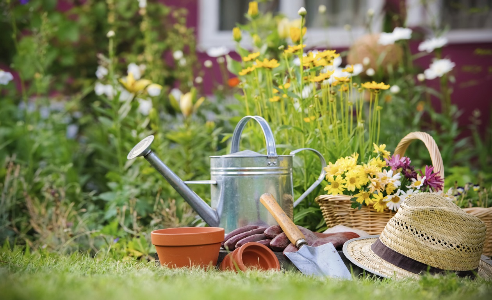

Jardinería a Domicilio
- 

Información de la empresa
Si no tienes tiempo para conseguir el jardín que siempre has soñado, es mejor contratar a una empresa de jardineros a domicilio que se encargue de todo. Estos profesionales pueden ofrecer una gran variedad de servicios, pudiendo ayudar tanto en interiores, como en espacios al aire libre.
Nuestro jardinero a domicilio se encargará de dar forma a una zona de confort para los sentidos, todo un disfrute para la naturaleza.
Este servicio de jardinería incluye algunos trabajos como podrían ser las podas, riesgos, mantenimiento en general, desbroce, tratamientos efectivos contra las diferentes plagas, instalación de vallas, césped artificial, sistemas de riego manual o automático, limpieza palmeras en altura, entre otros tantos.
También podrás recibir asesoramiento para que puedas seguir con el tratamiento que el jardinero ha iniciado, así como consultar cualquier otro tipo de duda que se tenga.
Nuestros jardineros a domicilio trabajarán tanto para particulares, como para empresas, para comunidades de vecinos, urbanizaciones privadas de chalets, clubs de socios, ayuntamientos, piscinas privadas o públicas, viviendas unifamiliares… en definitiva, si estás buscando a un experto que pueda llevar a cabo un trabajo relacionado con la jardinería o mantenimiento, puedes contar con nosotros.
Nuestro servicio es personalizado, diseñado para estar a la altura de las diferentes circunstancias. Aunque nuestra sede se encuentra principalmente en Madrid, no tenemos problema en dar servicio a lo largo de toda la Comunidad.
Ten a mano el contacto de nuestro jardinero a domicilio por si lo puedes llegar a necesitar.
Servicios